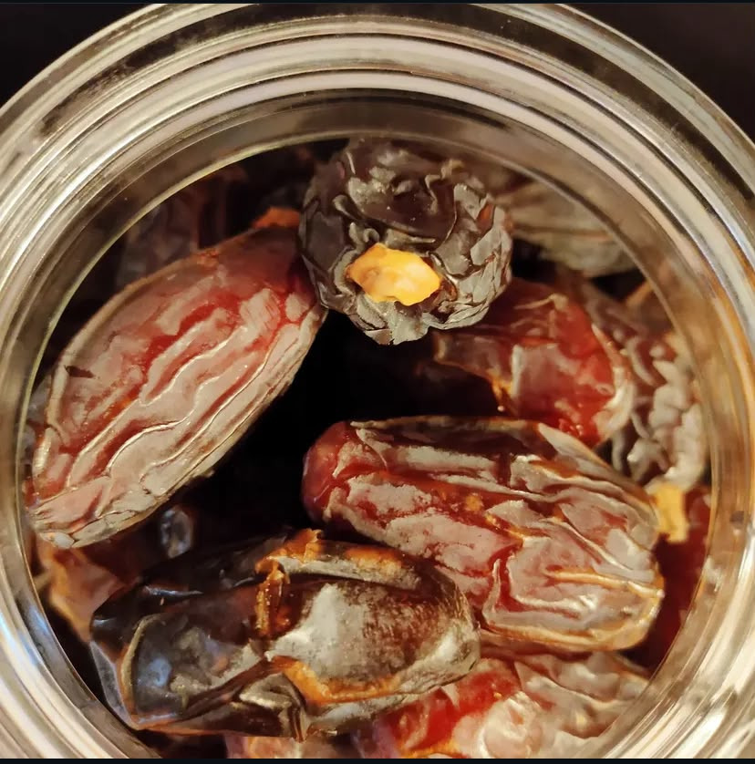
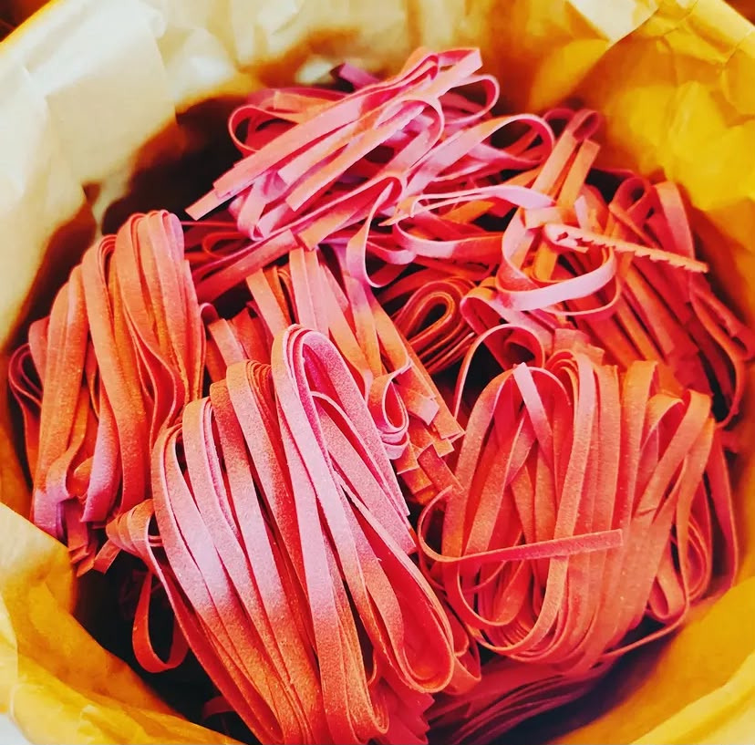
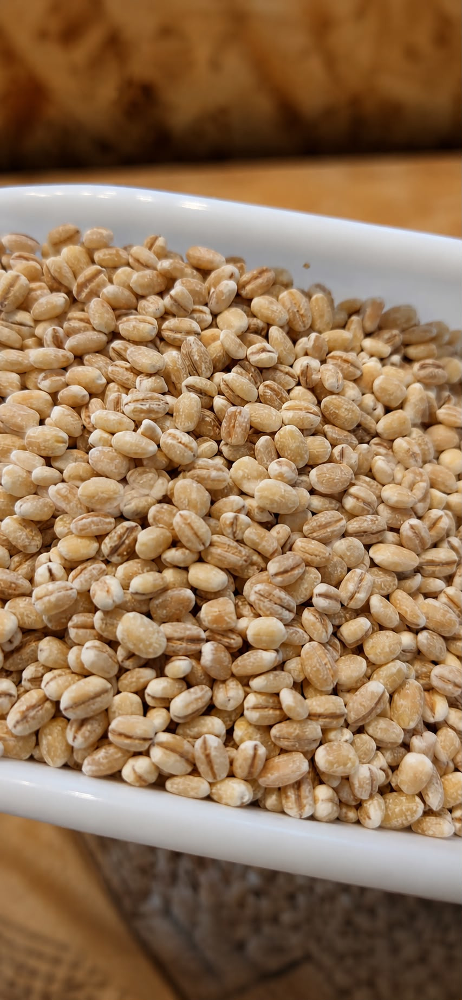
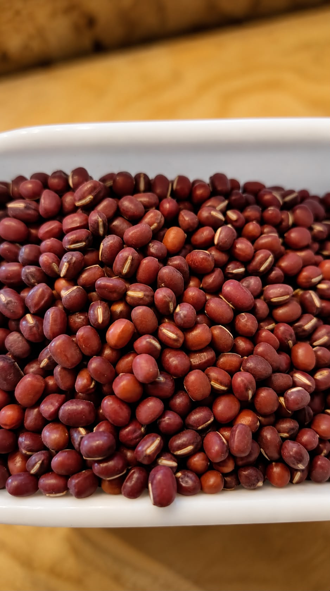
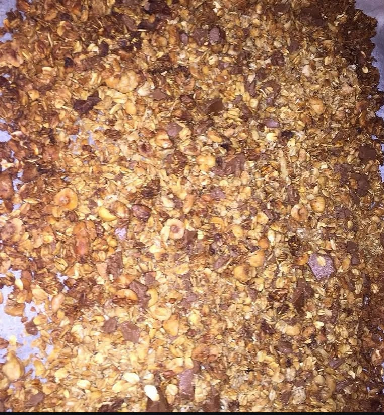
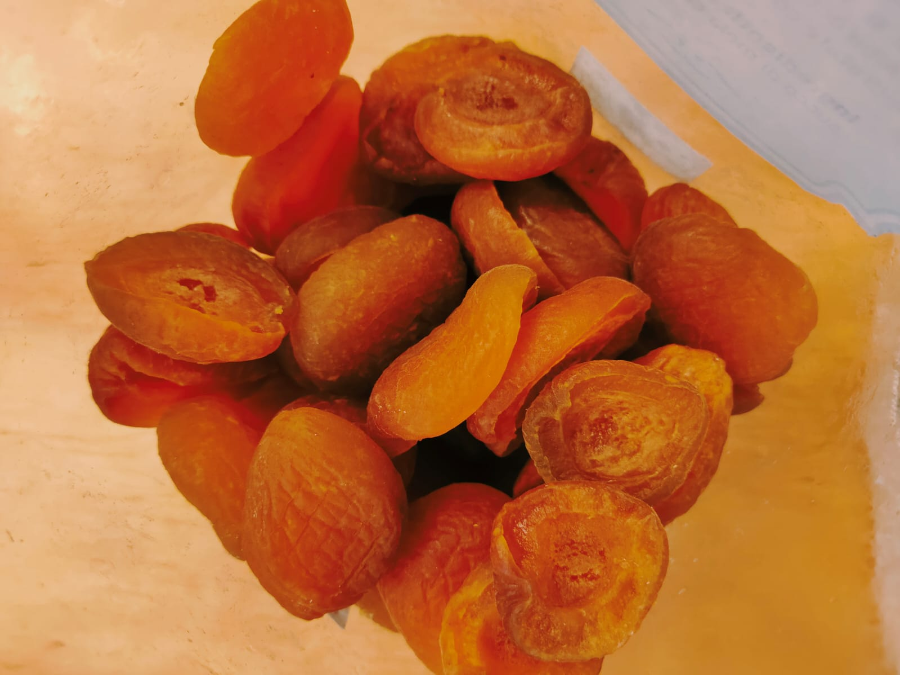

Negozio Sfuso
Acquista solo quello che ti serve, nella quantità che desideri.
Oltre 300 prodotti selezionati tra cereali, legumi, spezie,
farine, tisane, frutta secca e molto altro.
Perché scegliere lo sfuso?
Un modo semplice e consapevole di fare la spesa: acquisti solo ciò che ti serve, riduci gli sprechi e trovi prodotti selezionati con attenzione.
🌱 Solo ciò che ti serve
Acquista pochi grammi oppure grandi quantità, senza confezioni già pronte.
♻️ Meno sprechi
Un piccolo gesto che aiuta a ridurre gli imballaggi e gli sprechi alimentari.
⭐ Prodotti selezionati
Ingredienti scelti con cura per offrirti qualità e varietà ogni giorno.
❤️ Consigli personalizzati
Ti aiutiamo a scegliere il prodotto più adatto alle tue esigenze e alle tue ricette.
Cosa trovi in negozio
Una selezione di prodotti sfusi scelti con attenzione, pensata per chi ama la qualità, la sostenibilità e il piacere di cucinare.
Paste artigianali
Trafilate al bronzo e specialità selezionate.
Legumi
Da tutto il mondo, in tantissime varietà.
Spezie, sali ed erbe aromatiche
Profumi e sapori per ogni ricetta.
Tè e tisane
Miscele aromatiche per ogni momento.
Frutta secca
Naturalmente ricca di gusto.
Frutta disidratata
Da usare in tutte le preparazioni o da mangiare così.
Colazione
Tante alternative per la tua colazione.
Dolci e piccoli sfizi
Per concedersi un momento di dolcezza.
Cereali
Tante alternative di cereali.
Salatini
Tante alternative per i tupi snack o aperitivi.
Biscotti
Tante alternative per la tua colazione.
Prodotti Vegani
Tante alternative per sbizzarrirti in cucina nel mondo veg.
Semi
Tantissimi tipi di semi.
Caramelle
Tante caramelle da piccoli fornitori.
Caffe'
Tanti tipi di caffè in grani.
E molto altro...
Che potrete scoprire venendo in negozio.
Uno sguardo alla Buteghina
Tra scaffali ricchi di prodotti, profumi di spezie e ingredienti selezionati, ogni angolo racconta la nostra passione per lo sfuso.





